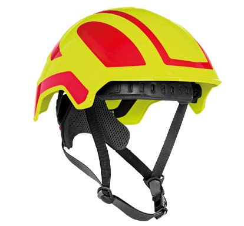
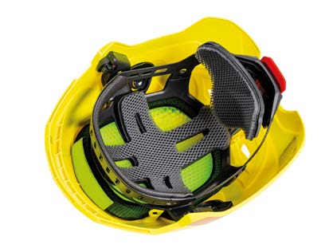
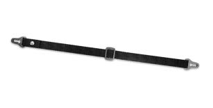
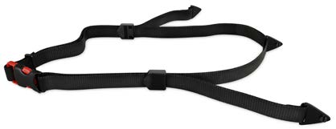
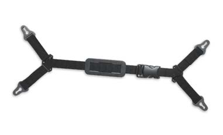
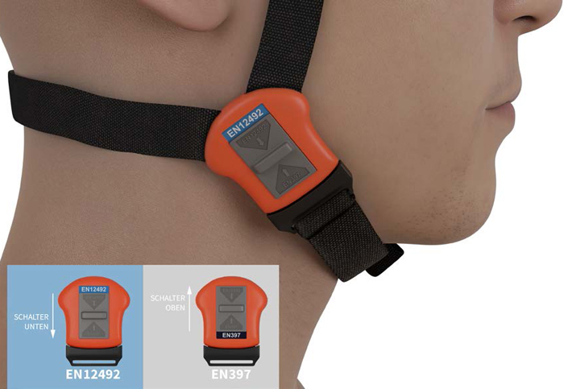

Der Unternehmer bzw. die Unternehmerin darf nur solchen Kopfschutz auswählen und bereitstellen, der den Kriterien nach § 2 der PSA-Benutzungsverordnung entspricht.
Kopfschutz muss demnach
Kopfschutz ist grundsätzlich in solchen Bereichen einzusetzen, die im Anwendungsbereich der angewendeten Norm festgelegt sind. Somit ist zum Beispiel eine Verwendung von Bergsteigerhelmen in industriellen Bereichen nicht ohne Weiteres möglich. Dennoch kann der Einsatz von Bergsteigerhelmen, bei speziellen Tätigkeiten in industriellen Bereichen, möglich sein. Im Rahmen der Gefährdungsbeurteilung müssen die Anforderungen aus der jeweiligen Arbeitssituation und den auszuführenden Tätigkeiten mit den Leistungs- und Schutzfunktionen des Bergsteigerhelms abgeglichen werden. Nur wenn der Bergsteigerhelm den gleichen oder höheren Schutz gegen die vorliegenden Gefährdungen bietet, kann er als geeigneter Kopfschutz eingesetzt werden.
Dabei sind unter anderem folgende Punkte zu beachten:
Es gibt Kopfschutz, der die verbindlichen Anforderungen mehrerer Normen erfüllt und auch mit diesen Normen gekennzeichnet wird.
Die Normen für die Hochleistungs-Industrieschutzhelme und die Bergsteigerhelme haben nur wenige allgemeine Beschaffenheitsanforderungen, so dass sich die Erfüllung dieser Normen im Wesentlichen durch die verbindlichen Leistungsanforderungen ergibt. Bei der Norm für die Industrieschutzhelme existieren jedoch noch detaillierte Beschaffenheitsanforderungen, z. B. in Form von vorgegebenen Abständen in der Helmkonstruktion. Können diese Beschaffenheitsanforderungen nicht alle umgesetzt werden, beispielsweise aufgrund der Verwendung einer Innenausstattung in Form einer Innenschale anstatt der vorgesehenen Stoßdämpfungsbänder, so hat der Hersteller die nicht erfüllten Punkte in der mitzuliefernden Anleitung darzulegen.
Durch die Anwendung zweier oder mehrerer Normen für einen Schutzhelm kam es in den vergangenen Jahren zu kombinierten Produkten von Kopfschutz und der Bezeichnung "Multinorm". So werden vermehrt Schutzhelme entwickelt, die nach den Normen für Bergsteiger- und Industrieschutzhelme zertifiziert werden. Auch die Kombination eines Industrieschutz- und Bergsteigerhelms mit einem Fahrradhelm ist heute auf dem Markt erhältlich. Solche Schutzhelme können z. B. eine Lösung für den Einsatz in Betrieben sein, in denen die Helme auch für den innerbetrieblichen Verkehr mit Fahrrädern eingesetzt werden sollen.

Abb. 17a Multi-Norm-Helm

Abb. 17b Innenausstattung
Der abgebildete Helm erfüllt die verbindlichen Anforderungen der folgenden Normen: Industrieschutzhelme, Bergsteigerhelme, Fahrradhelme, Helme für alpine Skiläufer und für Snowboarder (Klasse B).
Die Zusatzanforderung der elektrischen Isolierung, die für Industrieschutzhelme, Hochleistungs-Industrieschutzhelme und Anstoßkappen optional geprüft werden können, sollen den Träger oder die Trägerin gegen kurzzeitigen unbeabsichtigten Kontakt mit spannungsführenden Leitungen mit Wechselspannungen bis zu 440 Volt schützen.
Diese elektrische Eigenschaft deckt nicht den Einsatz bei den Arbeitsverfahren "Arbeiten unter Spannung" oder "Arbeiten in der Nähe unter Spannung stehender Teile" ab. Für diese Arbeitsverfahren bieten lediglich elektrisch isolierende Helme für Arbeiten an Nieder- und Mittelspannungsanlagen einen ausreichenden Schutz.
Ein Kinnriemen erhöht die Wahrscheinlichkeit, dass der Helm bei den auszuführenden Tätigkeiten – auch bei ungünstigen Körperhaltungen, wie z. B. Überkopfarbeiten – und bei dem Vorliegen äußerer Einwirkungen auf dem Kopf verbleibt.
Sollte aufgrund der Gefährdungen die Benutzung eines Kinnriemens erforderlich werden, ist zu beachten, dass die Normen für Hochleistungs-Industrieschutzhelme und für Industrieschutzhelme keinen verbindlichen Kinnriemen vorsehen. Ein Kinnriemen muss je nach Lieferumfang der Hersteller gegebenenfalls separat bestellt werden.
Die Befestigung des Kinnriemens erfolgt an zwei Punkten des Helms. Bei Tätigkeiten mit einer Absturzgefährdung ist dieser Kinnriemen ungeeignet.

Abb. 18 Zwei-Punkt-Kinnriemen
Die Befestigung des Kinnriemens erfolgt an drei Punkten des Helms. Dieser Kinnriemen eignet sich bei einer möglichen Absturzgefährdung.

Abb. 19 Drei-Punkt-Kinnriemen
Die Befestigung des Kinnriemens erfolgt an vier Punkten des Helms und eignet sich ebenfalls bei einer möglichen Absturzgefährdung.

Abb. 20 Vier-Punkt-Kinnriemen
Es gibt Kinnriemen mit Umstellschalter, die in der einen Stellung die Auslösewerte der Industrieschutzhelme und in der anderen Stellung die Auslösewerte der Bergsteigerhelme erfüllen. Im Rahmen der Unterweisung müssen die Benutzer bzw. die Benutzerinnen speziell über diese Wechselmöglichkeiten informiert werden.

Abb. 21 4-Punkt-Kinnriemen mit Umschalt-Funktion zum Wechseln zwischen den Anforderungen der Normen EN 397 und EN 12492
Bei einer vorliegenden Gefährdung durch Absturz ist es von entscheidender Bedeutung, dass der Helm während des Absturzes, bei einem möglichen Anprall an Gegenstände sowie beim Aufprall, auf dem Kopf verbleibt. Daher ist bei einer vorliegenden Gefährdung durch Absturz zu empfehlen, einen Schutzhelm auszuwählen, der über einen Kinnriemen verfügt, der den sicheren Verbleib des Helms auf dem Kopf gewährleistet. Dies kann mit einem 3- oder 4-Punkt-Kinnriemen erreicht werden, der bis zu einer Kraft von mindestens 500 N nicht öffnet oder nachgibt – entsprechend der Norm für Bergsteigerhelme. Weiterhin ist eine allseitige bzw. seitliche Stoßdämpfung durch eine entsprechende Prüfung, wie bei den Bergsteiger- und den Hochleistungs-Industrieschutzhelmen, empfehlenswert. Auch die überprüfte Wirksamkeit der Trageeinrichtung spricht für den Einsatz eines Bergsteigerhelms, da der Verbleib des Helms auf dem Kopf durch eine Prüfung nachgewiesen wurde. Bei Tätigkeiten mit einer Gefährdung durch Absturz in industriellen Bereichen empfehlen sich Schutzhelme, die zum einen der Norm für Bergsteigerhelme und zum anderen der jeweiligen Norm für Industrieschutzhelme oder Hochleistungs-Industrieschutzhelme entsprechen.
Gegen äußere Verletzungen des Kopfes, wie Prellungen, Abschürfungen, Platzwunden oder selbst Schädelbrüche kann ein Helm schützen. Die Empfehlungen in dieser DGUV Regel bezüglich der Benutzung von Schutzhelmen bei Abstürzen beziehen sich daher lediglich auf diese Verletzungsfolgen. Schwere Verletzungen des Gehirns werden unter anderem auf Rotationskräfte zurückgeführt, die durch Kräfte verursacht werden, die nicht genau in der zentralen senkrechten Achse oder nicht vertikal auf den Helm einwirken. In beiden Fällen entsteht ein Drehmoment, das sich vom Helm auf den Kopf überträgt und zu einer Beschleunigung des Gehirns führt. Mit zunehmender Rotationsbeschleunigung steigt die Belastung des Gehirns. Schwere Verletzungen, wie ein Schädel-Hirn-Trauma, können die Folge sein. Aufgrund der Komplexität zwischen Krafteinwirkungen auf den Kopf und der Ableitung daraus resultierender Verletzungsfolgen gibt es derzeit keine Norm für Schutzhelme dieser DGUV Regel, die spezielle Anforderungen in Bezug auf die Gefährdung durch Absturz beinhalten. Einige Hersteller haben die komplexe Thematik der Rotationskräfte bereits aufgegriffen und für einige Helmarten konstruktive Maßnahmen zur Reduzierung dieser Kräfte entwickelt.
Die Sicht verschlechternde Einflüsse, wie Dunkelheit, Nebel und Staub können die Sichtbarkeit von Personen in deren Tätigkeitsbereichen erheblich vermindern und somit Unfälle begünstigen. Werden zudem Transportmittel, wie beispielsweise Baumaschinen, in unübersichtlichen Arbeitssituationen eingesetzt, bei denen Personen in Vertiefungen bzw. Gräben oder zwischen Bauteilen oder anderen Gegenständen arbeiten, steigt die Wahrscheinlichkeit eines Unfalls aufgrund mangelnder Sichtbarkeit. Die Sichtbarkeit lässt sich neben dem obligatorischen Einsatz von Warnkleidung auch durch den Einsatz von Helmen mit Helmschalen aus fluoreszierendem Material oder mit retroreflektierenden Oberflächen verbessern, sodass die Eintrittswahrscheinlichkeit erfasst oder überrollt zu werden verringert werden kann.
Die Akzeptanz zum Benutzen von Kopfschutz hängt stark davon ab, wie angenehm sich der Kopfschutz tragen lässt. Die zugrunde liegenden Helmparameter, wie Gewicht, Lage des Schwerpunktes, Lüftung, guter Sitz, Einstellmöglichkeiten, Polsterung bzw. Ausführung der Innenausstattung etc. beeinflussen das Trageempfinden erheblich. Zusätzlich sind es die individuellen körperlichen Voraussetzungen, ggf. persönliche Unverträglichkeiten und Vorlieben des jeweiligen Benutzers oder Benutzerin, wie ein Kopfschutz beim Tragen empfunden wird. So bevorzugt ein Teil der Benutzer bzw. Benutzerinnen von Industrieschutzhelmen weiterhin die ursprüngliche Innenausstattung mit Textilbändern, währenddessen der andere Teil eine Innenausstattung mit einer Schaumstoffschale bevorzugt. Insofern ist es bei der betrieblichen Auswahl von Schutzhelmen ratsam, neben verschiedenen Herstellern auch Helme mit unterschiedlichen Innenausstattungen in Betracht zu ziehen. Da sich das Gewicht und der Schwerpunkt des Helms beim Anbau von Zubehörteilen möglicherweise ungünstig auf das Trageempfinden auswirken kann, sollte dieser Umstand bereits bei der Auswahl des Kopfschutzes Berücksichtigung finden. Aufgrund des subjektiven Trageempfindens empfiehlt sich bei der Auswahl von Kopfschutz, die späteren Benutzer und Benutzerinnen bei der Auswahl einzubeziehen – z. B. in Form von Trageversuchen.